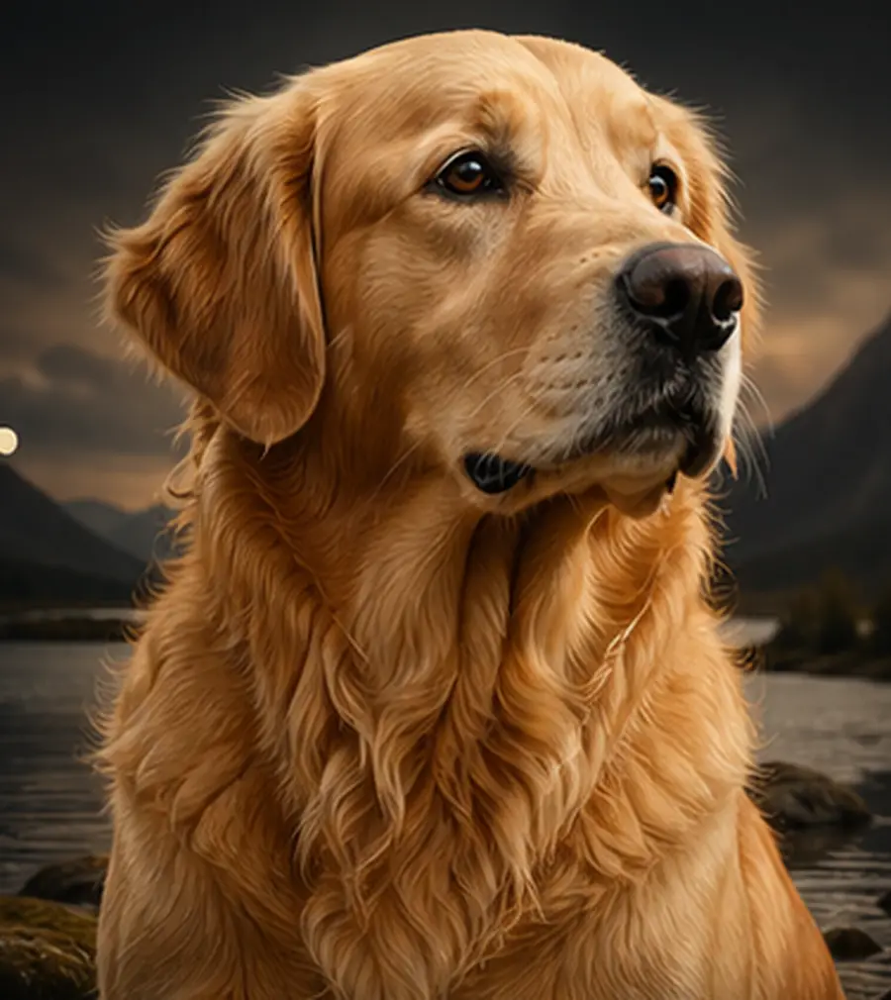
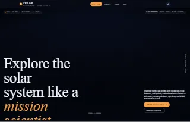
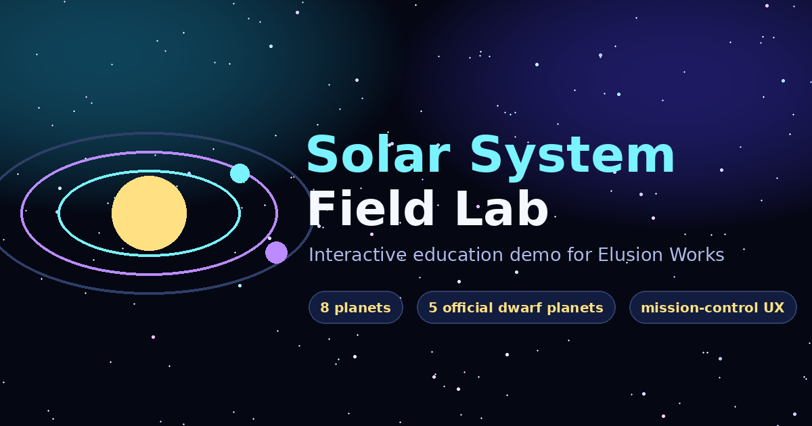
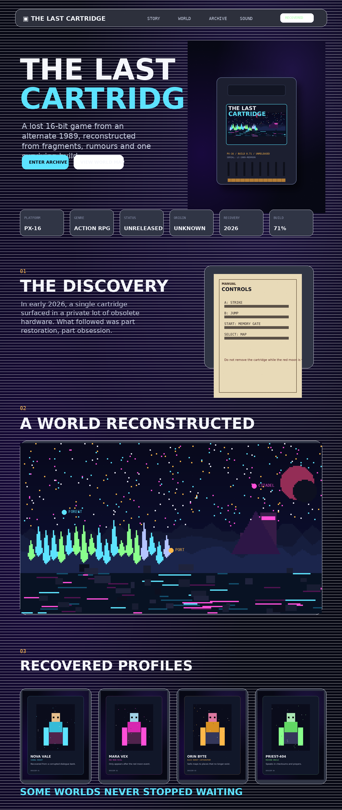
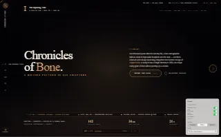

Elusion Works demos
A simple shelf for public website prototypes.
This page keeps the demos findable while the collection is still young. Each entry can be a full mini-site, a visual prototype, or a working experiment before it earns a bigger home.
Available demos
The public demo library.
Nexus Aetherial
A modern AI reference desk prototype with a live console, cognitive compare matrix, model anatomy explainer, expandable dossier cabinet, benchmark digest and theme/tweak controls.

Golden
A premium breed encyclopedia concept with a cinematic hero, image-led sections, gallery, guide pages, and shared chrome. It is a prototype, not a live publication.

Solar System Field Lab
A dark-mode mission-science lab with a live 3D orbit canvas, compressed/log/honest distance modes, fullscreen flyby, searchable planet explorer, scale calculator, quiz, and procedural planet pages.

Solar System Learning Demo
The earlier static education mini-site with an orbit lab, planet explorer, comparison tools, scale model, dwarf planet dock, quiz, and visible NASA/JPL/IAU source notes.

The Last Cartridge
A cinematic digital artefact exhibition for a fictional lost 16-bit cartridge, with boot sequence, world hotspots, recovered profiles, gameplay stills, soundtrack fragments and archive objects.

Chronicles of Bone
A single-page horizontally-scrolling cinematic showcase for a fictional feature film, doubling as a quiet portrait of the modern director's toolkit across five acts.